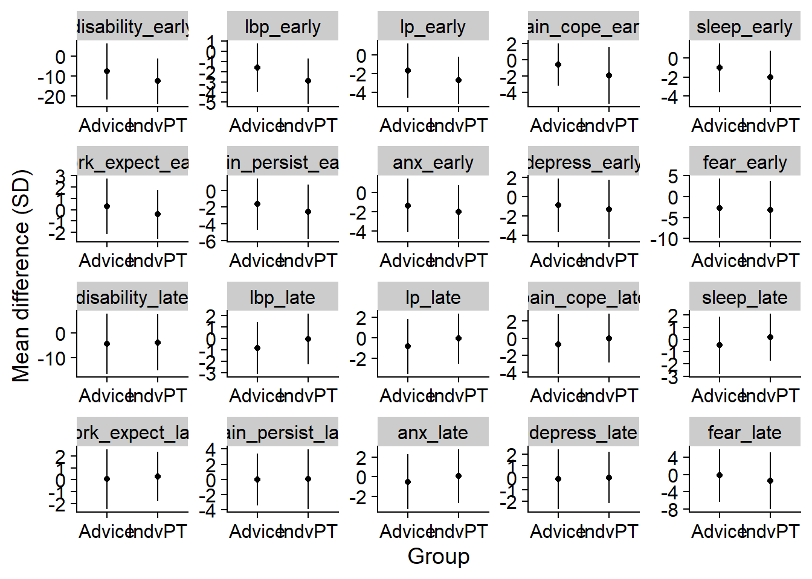
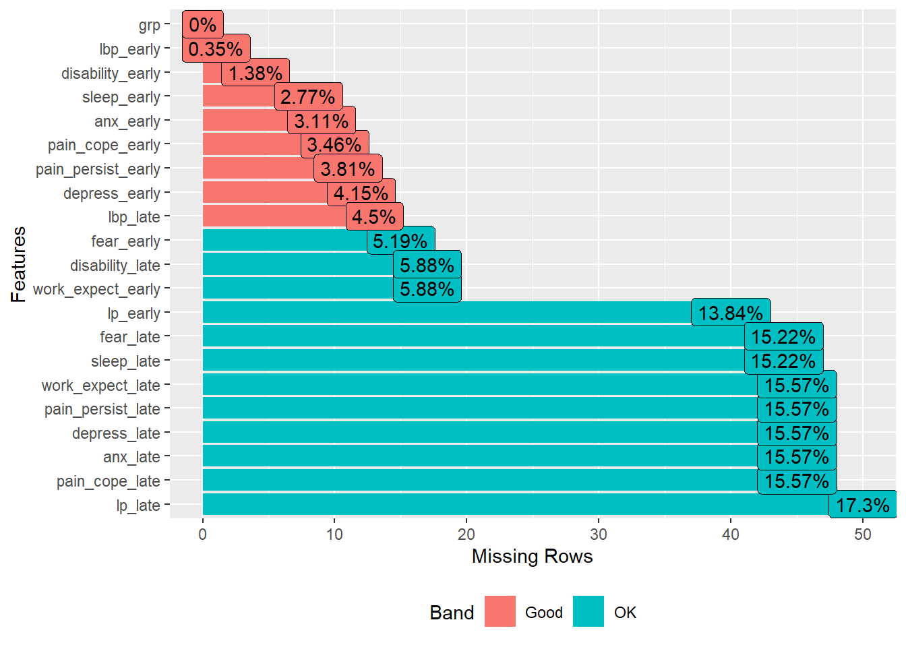
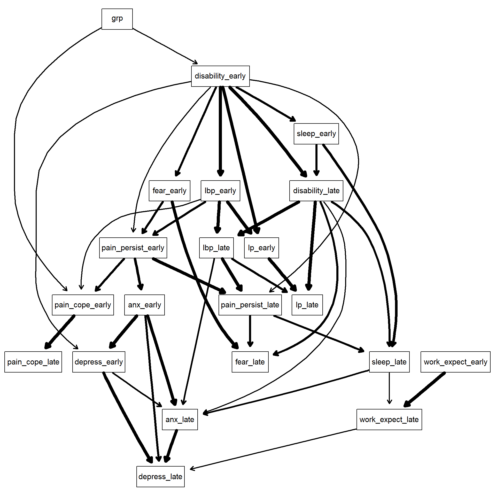
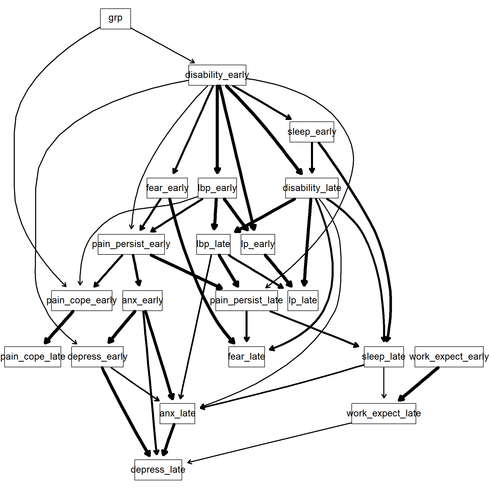
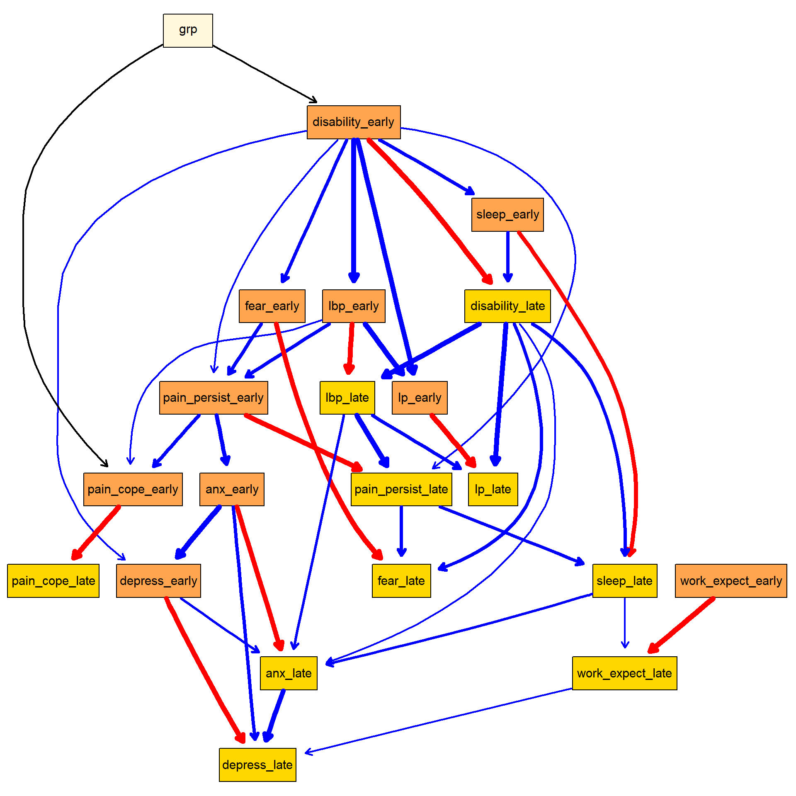
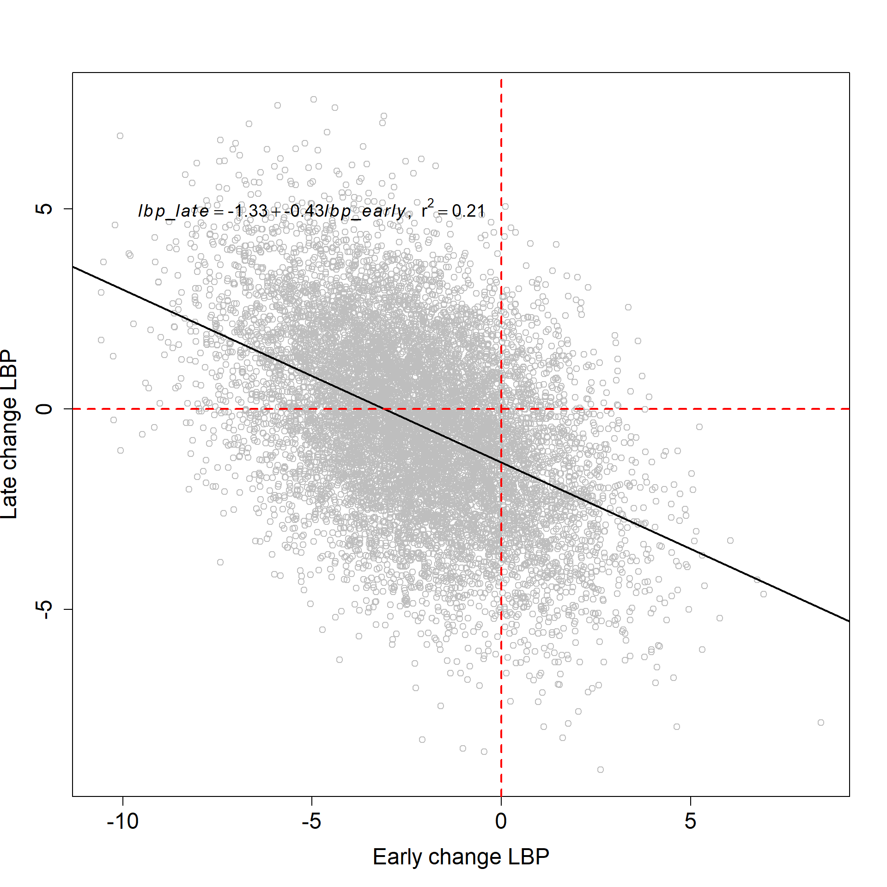
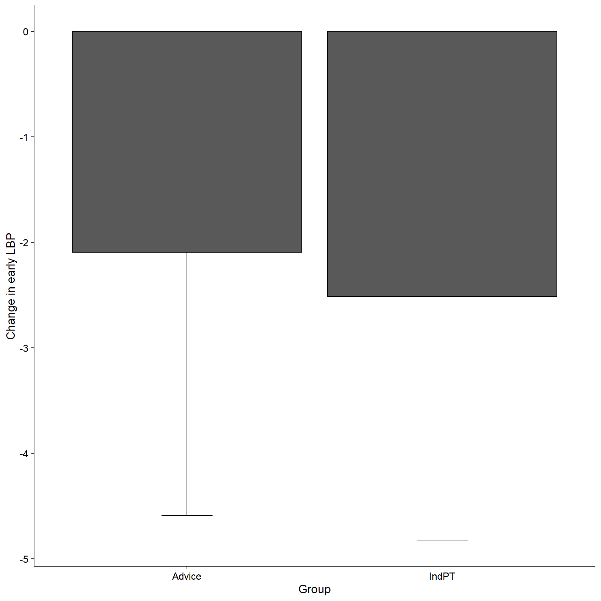
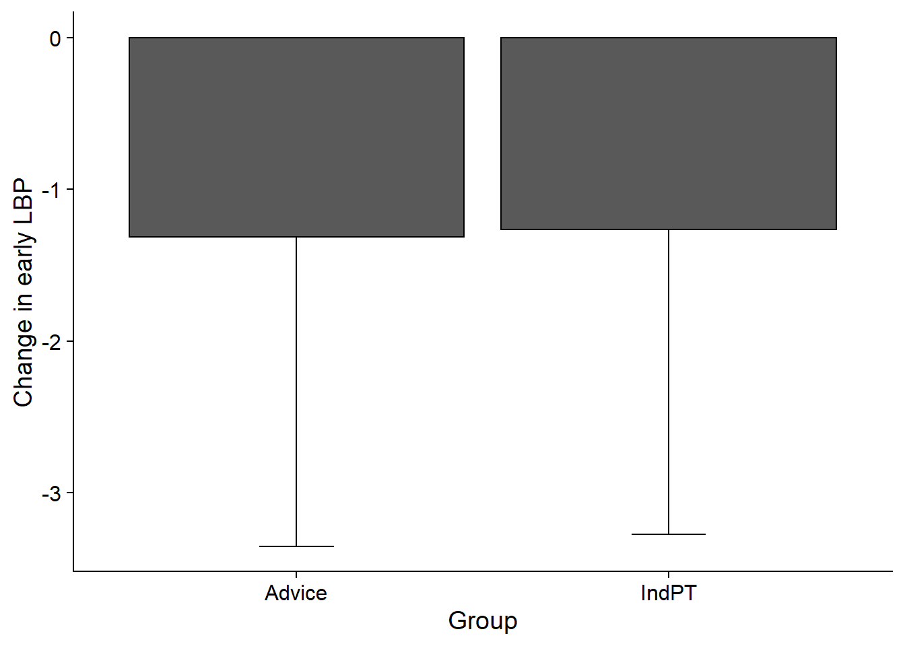
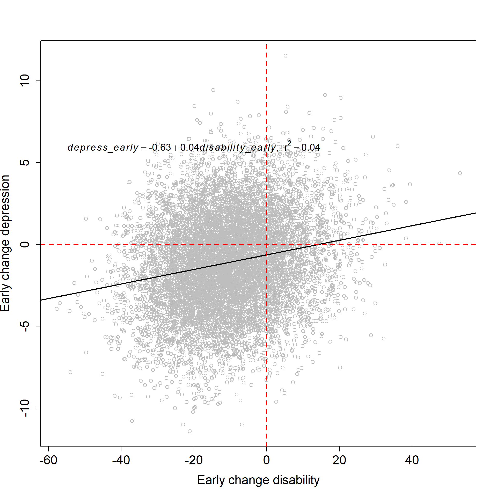
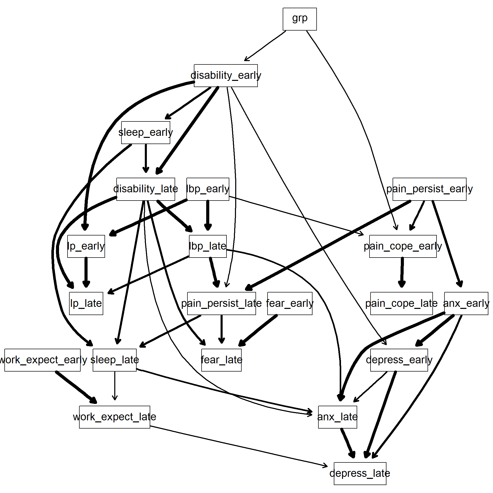

Last updated: 2020-10-21
Checks: 7 0
Knit directory: 2020_LBPcausal/
This reproducible R Markdown analysis was created with workflowr (version 1.6.2). The Checks tab describes the reproducibility checks that were applied when the results were created. The Past versions tab lists the development history.
Great! Since the R Markdown file has been committed to the Git repository, you know the exact version of the code that produced these results.
Great job! The global environment was empty. Objects defined in the global environment can affect the analysis in your R Markdown file in unknown ways. For reproduciblity it’s best to always run the code in an empty environment.
The command set.seed(20200422) was run prior to running the code in the R Markdown file. Setting a seed ensures that any results that rely on randomness, e.g. subsampling or permutations, are reproducible.
Great job! Recording the operating system, R version, and package versions is critical for reproducibility.
Nice! There were no cached chunks for this analysis, so you can be confident that you successfully produced the results during this run.
Great job! Using relative paths to the files within your workflowr project makes it easier to run your code on other machines.
Great! You are using Git for version control. Tracking code development and connecting the code version to the results is critical for reproducibility.
The results in this page were generated with repository version e8814e2. See the Past versions tab to see a history of the changes made to the R Markdown and HTML files.
Note that you need to be careful to ensure that all relevant files for the analysis have been committed to Git prior to generating the results (you can use wflow_publish or wflow_git_commit). workflowr only checks the R Markdown file, but you know if there are other scripts or data files that it depends on. Below is the status of the Git repository when the results were generated:
Ignored files:
Ignored: .Rhistory
Ignored: .Rproj.user/
Ignored: code/network_WIP.R
Ignored: code/network_WIP_mgm.R
Ignored: output/data_clean.xlsx
Ignored: output/image/
Ignored: output/odi_network.tiff
Ignored: output/odi_nw.RDS
Ignored: output/odi_stability.tiff
Ignored: output/odi_strength.tiff
Ignored: output/orebro_nw.RDS
Untracked files:
Untracked: output/temp.RData
Note that any generated files, e.g. HTML, png, CSS, etc., are not included in this status report because it is ok for generated content to have uncommitted changes.
These are the previous versions of the repository in which changes were made to the R Markdown (analysis/ReportResults.Rmd) and HTML (docs/ReportResults.html) files. If you’ve configured a remote Git repository (see ?wflow_git_remote), click on the hyperlinks in the table below to view the files as they were in that past version.
| File | Version | Author | Date | Message |
|---|---|---|---|---|
| Rmd | 71501c3 | bernard-liew | 2020-10-21 | added analysis files for publication |
# Helper packages
library (tidyverse)
library (Rgraphviz)
library (corrr)
library (corrplot)
library (DataExplorer)
library (cowplot)
# Modelling
library (bnlearn)
library (qgraph)
# Parallel
library (doParallel)
# Tables
library (flextable)
library (officer)rm (list = ls())
load ("output/results_early2late.RData")
imp.data = impute (fit, data = df.bn, method = "bayes-lw")
var_order <- c("disability_early", "lbp_early", "lp_early", "pain_cope_early",
"sleep_early", "work_expect_early", "pain_persist_early",
"anx_early", "depress_early","fear_early",
"disability_late", "lbp_late", "lp_late", "pain_cope_late",
"sleep_late", "work_expect_late", "pain_persist_late",
"anx_late", "depress_late","fear_late")df.plot <- df %>%
pivot_longer(cols = -c("id", "grp", "subgrp"),
names_to = "var",
values_to = "val") %>%
filter (var %in% var_order) %>%
mutate (var = factor (var, levels = var_order),
grp = factor (grp, labels = c("Advice", "IndvPT"))) %>%
group_by(grp, var) %>%
summarize (Mean = mean (val, na.rm = TRUE),
Sd = sd (val, na.rm = TRUE))`summarise()` regrouping output by 'grp' (override with `.groups` argument)f <- ggplot (df.plot) +
geom_point(aes (x = grp, y = Mean), colour = "black", fill = "black", stat = "identity") +
geom_errorbar(aes (x = grp, ymin = Mean - Sd, ymax = Mean + Sd), width = 0) +
facet_wrap(~ var, scales = "free") +
labs (x = "Group",
y = "Mean difference (SD)") +
theme(text = element_text(size=16)) +
theme_cowplot()
f
# tiff(width = 10, height = 8, units = "in", res = 100, file = "../manuscript/fig1.tiff")
# f
# dev.off()f <- plot_missing(df.bn) +
labs (y = "Percentage missing",
x = "Variables") +
theme_cowplot()
# tiff(width = 10, height = 8, units = "in", res = 300, file = "../manuscript/sm_fig1.tiff")
# f
# dev.off()demo.var <- c("grp")
# out.var <- grep ("outcome", names (df.bn), value = TRUE)
early.var <- grep ("early", names (df.bn), value = TRUE)
late.var <- grep ("late", names (df.bn), value = TRUE)
bootstr = custom.strength(boot_bl_rel, nodes = names(df.bn))
avg = averaged.network(bootstr, threshold = 0.5)
fit = bn.fit (avg, df.bn, method = "mle")
g = strength.plot(avg,
bootstr,
shape = "rectangle")
graph::nodeRenderInfo(g) = list(fontsize=18)
renderGraph(g)
arc_col <- data.frame(arcs = names (edgeRenderInfo(g)$col)) %>%
separate(arcs, c("parent", "child"), sep = "~")
coef_fit <- coef(fit)
coef_fit <- coef_fit[!map_lgl(coef_fit, is.matrix)]
coef_fit <- coef_fit[!map_lgl(coef_fit, is.table)]
coef_fit <- coef_fit %>%
unlist ()
coef_fit <- coef_fit[!grepl ("Intercept", names (coef_fit))]
coef_fit <- data.frame(arcs = names (coef_fit), coefs = coef_fit) %>%
separate(arcs, c ("child", "parent"), sep = "[.]")
new_col <- arc_col %>%
left_join(coef_fit, by = c("parent", "child")) %>%
mutate (coefs = replace_na(coefs,88)) %>%
mutate (col = ifelse (coefs < 0, "red",
ifelse (coefs == 88, "black", "blue"))) %>%
mutate (col = ifelse (parent == "pain_persist_early" & child == "pain_cope_early", "blue",
ifelse (parent == "lbp_early" & child == "pain_cope_early", "blue", col)))
new_arc_col <- new_col$col
names (new_arc_col) <- names (edgeRenderInfo(g)$col)
nodeRenderInfo(g)$fill[demo.var] = "cornsilk"
nodeRenderInfo(g)$fill[early.var] = "tan1"
nodeRenderInfo(g)$fill[late.var] = "gold"
#nodeRenderInfo(g)$fill[out.var] = "tomato"
edgeRenderInfo(g)$col <- new_arc_col
graph::nodeRenderInfo(g) = list(fontsize=14)
#tiff(width = 25, height = 15, units = "in", res = 300, file = "../manuscript/fig2.tiff")
renderGraph(g)
#dev.off()corr.df_ord <- corr.df[var_order]
correlation <- data.frame(Variable = names (corr.df_ord),
Value = corr.df_ord %>% round (2)) %>%
mutate (Strength = ifelse (abs (Value) <= 0.3, "negligible",
ifelse (abs(Value) > 0.3 & abs(Value <= 0.5), "low",
ifelse (abs(Value) > 0.5 & abs(Value <= 0.7), "moderate",
ifelse (abs(Value) > 0.7 & abs(Value <= 0.9), "high",
"very high")))))
correlation %>%
kableExtra::kable()| Variable | Value | Strength |
|---|---|---|
| disability_early | 0.72 | high |
| lbp_early | 0.68 | moderate |
| lp_early | 0.71 | high |
| pain_cope_early | 0.52 | moderate |
| sleep_early | 0.53 | moderate |
| work_expect_early | 0.44 | low |
| pain_persist_early | 0.62 | moderate |
| anx_early | 0.76 | high |
| depress_early | 0.69 | moderate |
| fear_early | 0.55 | moderate |
| disability_late | 0.73 | high |
| lbp_late | 0.71 | high |
| lp_late | 0.70 | moderate |
| pain_cope_late | 0.46 | low |
| sleep_late | 0.59 | moderate |
| work_expect_late | 0.42 | low |
| pain_persist_late | 0.65 | moderate |
| anx_late | 0.74 | high |
| depress_late | 0.65 | moderate |
| fear_late | 0.53 | moderate |
# ft <- flextable(correlation) %>%
# set_caption(paste0("Correlation between observed and predicted change values")) %>%
# autofit()
# my_path <- paste0("../manuscript/table1_corr.docx")
#
# my_doc <- read_docx() %>%
# body_add_flextable(ft)
#
# print (my_doc, target = my_path)lbp_early-lbp_late relationshipset.seed(123)
sim <- cpdist(fit, nodes = c("lbp_early", "lbp_late"), n = 10^4,
evidence = (TRUE))
m <- lm(lbp_late ~ lbp_early, data = sim)
coefs <- coef(m)
b0 <- round(coefs[1], 2)
b1 <- round(coefs[2],2)
r2 <- round(summary(m)$r.squared, 2)
summary (m)
Call:
lm(formula = lbp_late ~ lbp_early, data = sim)
Residuals:
Min 1Q Median 3Q Max
-7.8249 -1.3806 0.0108 1.3642 7.3142
Coefficients:
Estimate Std. Error t value Pr(>|t|)
(Intercept) -1.334012 0.027806 -47.98 <2e-16 ***
lbp_early -0.431937 0.008416 -51.33 <2e-16 ***
---
Signif. codes: 0 '***' 0.001 '**' 0.01 '*' 0.05 '.' 0.1 ' ' 1
Residual standard error: 2.015 on 9998 degrees of freedom
Multiple R-squared: 0.2085, Adjusted R-squared: 0.2085
F-statistic: 2634 on 1 and 9998 DF, p-value: < 2.2e-16eqn <- bquote(italic(lbp_late) == .(b0) + .(b1)*italic(lbp_early) * "," ~~
r^2 == .(r2))
#tiff(width = 10, height = 8, units = "in", res = 300, file = "../manuscript/fig3.tiff")
plot(sim$lbp_early, sim$lbp_late,
ylab = "Late change LBP", xlab = "Early change LBP", col = "grey", cex.axis = 1.5, cex.lab = 1.5) +
abline(coef(m), lwd = 2) +
abline(v = 0, col = 2, lty = 2, lwd = 2) +
abline(h = 0, col = 2, lty = 2, lwd = 2) +
text(x = -5, y = 5, labels = eqn, cex = 1.2)
integer(0)#dev.off()disability_early on the grp-lbp_early relationshipgrp on lbp_earlyset.seed(123)
sim <- cpdist(fit, nodes = c("grp", "lbp_early"), n = 10^4,
evidence = TRUE) # individualisedphysio, advice
m <- lm(lbp_early ~ grp, data = sim)
coefs <- coef(m)
b0 <- round(coefs[1], 2)
b1 <- round(coefs[2],2)
r2 <- round(summary(m)$r.squared, 2)
summary (m)
Call:
lm(formula = lbp_early ~ grp, data = sim)
Residuals:
Min 1Q Median 3Q Max
-8.6173 -1.6432 -0.0218 1.6649 9.8886
Coefficients:
Estimate Std. Error t value Pr(>|t|)
(Intercept) -2.09537 0.03512 -59.657 <2e-16 ***
grpindividualisedphysio -0.41786 0.04815 -8.677 <2e-16 ***
---
Signif. codes: 0 '***' 0.001 '**' 0.01 '*' 0.05 '.' 0.1 ' ' 1
Residual standard error: 2.403 on 9998 degrees of freedom
Multiple R-squared: 0.007475, Adjusted R-squared: 0.007376
F-statistic: 75.3 on 1 and 9998 DF, p-value: < 2.2e-16eqn <- bquote(italic(lp_outcome) == .(b0) + .(b1)*italic(lp_late) * "," ~~
r^2 == .(r2))
sim %>%
mutate (grp = ifelse (grp == "advice", "Advice", "IndPT")) %>%
group_by(grp) %>%
summarize (Mean = mean (lbp_early),
Sd = sd (lbp_early)) %>%
ggplot () +
geom_bar(aes (x = grp, y = Mean), color = "black", stat = "identity") +
geom_errorbar(aes (x = grp, ymin = Mean - Sd, ymax = Mean ), width = 0.2) +
labs (x = "Group",
y = "Change in early LBP") +
theme_cowplot()`summarise()` ungrouping output (override with `.groups` argument)
grp on lbp_early when disability_early is constantset.seed(123)
avg.mutilated = mutilated(avg, evidence = list(disability_early = 0))
fitted.mutilated = bn.fit (avg.mutilated , df.bn, method = "mle")
fitted.mutilated$disability_early = list(coef = c("(Intercept)" = 0), sd = 0)
sim <- cpdist(fitted.mutilated, nodes = c("grp", "lbp_early"), n = 10^4,
evidence = TRUE) # individualisedphysio, advice
m <- lm(lbp_early ~ grp, data = sim)
coefs <- coef(m)
b0 <- round(coefs[1], 2)
b1 <- round(coefs[2],2)
r2 <- round(summary(m)$r.squared, 2)
summary (m)
Call:
lm(formula = lbp_early ~ grp, data = sim)
Residuals:
Min 1Q Median 3Q Max
-7.073 -1.386 -0.015 1.360 8.758
Coefficients:
Estimate Std. Error t value Pr(>|t|)
(Intercept) -1.31150 0.02958 -44.343 <2e-16 ***
grpindividualisedphysio 0.04672 0.04055 1.152 0.249
---
Signif. codes: 0 '***' 0.001 '**' 0.01 '*' 0.05 '.' 0.1 ' ' 1
Residual standard error: 2.023 on 9998 degrees of freedom
Multiple R-squared: 0.0001328, Adjusted R-squared: 3.277e-05
F-statistic: 1.328 on 1 and 9998 DF, p-value: 0.2492sim %>%
mutate (grp = ifelse (grp == "advice", "Advice", "IndPT")) %>%
group_by(grp) %>%
summarize (Mean = mean (lbp_early),
Sd = sd (lbp_early)) %>%
ggplot () +
geom_bar(aes (x = grp, y = Mean), color = "black", stat = "identity") +
geom_errorbar(aes (x = grp, ymin = Mean - Sd, ymax = Mean ), width = 0.2) +
labs (x = "Group",
y = "Change in early LBP") +
theme_cowplot()
disability_early-depress_early relationshipset.seed(123)
sim <- cpdist(fit, nodes = c("disability_early", "depress_early"), n = 10^4,
evidence = (TRUE))
m <- lm(depress_early ~ disability_early, data = sim)
coefs <- coef(m)
b0 <- round(coefs[1], 2)
b1 <- round(coefs[2],2)
r2 <- round(summary(m)$r.squared, 2)
summary (m)
Call:
lm(formula = depress_early ~ disability_early, data = sim)
Residuals:
Min 1Q Median 3Q Max
-10.0691 -1.9157 -0.0429 1.9069 11.9347
Coefficients:
Estimate Std. Error t value Pr(>|t|)
(Intercept) -0.632550 0.036458 -17.35 <2e-16 ***
disability_early 0.044540 0.002185 20.38 <2e-16 ***
---
Signif. codes: 0 '***' 0.001 '**' 0.01 '*' 0.05 '.' 0.1 ' ' 1
Residual standard error: 2.828 on 9998 degrees of freedom
Multiple R-squared: 0.03989, Adjusted R-squared: 0.0398
F-statistic: 415.4 on 1 and 9998 DF, p-value: < 2.2e-16eqn <- bquote(italic(depress_early) == .(b0) + .(b1)*italic(disability_early) * "," ~~
r^2 == .(r2))
#tiff(width = 10, height = 8, units = "in", res = 300, file = "../manuscript/fig4.tiff")
plot(sim$disability_early, sim$depress_early, ylab = "Early change depression", xlab = "Early change disability", col = "grey", cex.axis = 1.5, cex.lab = 1.5) +
abline(coef(m), lwd = 2) +
abline(v = 0, col = 2, lty = 2, lwd = 2) +
abline(h = 0, col = 2, lty = 2, lwd = 2) +
text(x = -20, y = 6, labels = eqn, cex = 1.2)
integer(0)#dev.off()fear_early.set.seed(123)
avg.mutilated = mutilated(avg, evidence = list(fear_early = 0))
fitted.mutilated = bn.fit (avg.mutilated , df.bn, method = "mle")
fitted.mutilated$fear_early= list(coef = c("(Intercept)" = 0), sd = 0)
sim <- cpdist(fitted.mutilated, nodes = c("disability_early", "depress_early"), n = 10^4,
evidence = (TRUE))
m <- lm(depress_early ~ disability_early, data = sim)
coefs <- coef(m)
b0 <- round(coefs[1], 2)
b1 <- round(coefs[2],2)
r2 <- round(summary(m)$r.squared, 2)
summary (m)
Call:
lm(formula = depress_early ~ disability_early, data = sim)
Residuals:
Min 1Q Median 3Q Max
-10.1033 -1.9252 -0.0339 1.9126 11.9575
Coefficients:
Estimate Std. Error t value Pr(>|t|)
(Intercept) -0.615390 0.036416 -16.90 <2e-16 ***
disability_early 0.041966 0.002183 19.23 <2e-16 ***
---
Signif. codes: 0 '***' 0.001 '**' 0.01 '*' 0.05 '.' 0.1 ' ' 1
Residual standard error: 2.824 on 9998 degrees of freedom
Multiple R-squared: 0.03566, Adjusted R-squared: 0.03556
F-statistic: 369.7 on 1 and 9998 DF, p-value: < 2.2e-16lbp_early.set.seed(123)
avg.mutilated = mutilated(avg, evidence = list(lbp_early = 0))
fitted.mutilated = bn.fit (avg.mutilated , df.bn, method = "mle")
fitted.mutilated$lbp_early = list(coef = c("(Intercept)" = 0), sd = 0)
sim <- cpdist(fitted.mutilated, nodes = c("disability_early", "depress_early"), n = 10^4,
evidence = (TRUE))
m <- lm(depress_early ~ disability_early, data = sim)
coefs <- coef(m)
b0 <- round(coefs[1], 2)
b1 <- round(coefs[2],2)
r2 <- round(summary(m)$r.squared, 2)
summary (m)
Call:
lm(formula = depress_early ~ disability_early, data = sim)
Residuals:
Min 1Q Median 3Q Max
-10.0558 -1.9166 -0.0348 1.9094 12.0480
Coefficients:
Estimate Std. Error t value Pr(>|t|)
(Intercept) -0.558694 0.036407 -15.35 <2e-16 ***
disability_early 0.038628 0.002182 17.70 <2e-16 ***
---
Signif. codes: 0 '***' 0.001 '**' 0.01 '*' 0.05 '.' 0.1 ' ' 1
Residual standard error: 2.824 on 9998 degrees of freedom
Multiple R-squared: 0.03039, Adjusted R-squared: 0.03029
F-statistic: 313.3 on 1 and 9998 DF, p-value: < 2.2e-16pain_persist_early.set.seed(123)
avg.mutilated = mutilated(avg, evidence = list(pain_persist_early = 0))
fitted.mutilated = bn.fit (avg.mutilated , df.bn, method = "mle")
fitted.mutilated$pain_persist_early = list(coef = c("(Intercept)" = 0), sd = 0)
sim <- cpdist(fitted.mutilated, nodes = c("disability_early", "depress_early"), n = 10^4,
evidence = (TRUE))
m <- lm(depress_early ~ disability_early, data = sim)
coefs <- coef(m)
b0 <- round(coefs[1], 2)
b1 <- round(coefs[2],2)
r2 <- round(summary(m)$r.squared, 2)
summary (m)
Call:
lm(formula = depress_early ~ disability_early, data = sim)
Residuals:
Min 1Q Median 3Q Max
-10.3899 -1.8847 -0.0044 1.8833 11.2537
Coefficients:
Estimate Std. Error t value Pr(>|t|)
(Intercept) -0.439643 0.035721 -12.31 <2e-16 ***
disability_early 0.027573 0.002141 12.88 <2e-16 ***
---
Signif. codes: 0 '***' 0.001 '**' 0.01 '*' 0.05 '.' 0.1 ' ' 1
Residual standard error: 2.77 on 9998 degrees of freedom
Multiple R-squared: 0.01632, Adjusted R-squared: 0.01622
F-statistic: 165.8 on 1 and 9998 DF, p-value: < 2.2e-16fear_early, lbp_early, pain_persist_earlyset.seed(123)
avg.mutilated = mutilated(avg, evidence = list(fear_early = 0, lbp_early = 0, pain_persist_early = 0))
fitted.mutilated = bn.fit (avg.mutilated , df.bn, method = "mle")
fitted.mutilated$fear_early = list(coef = c("(Intercept)" = 0), sd = 0)
fitted.mutilated$lbp_early = list(coef = c("(Intercept)" = 0), sd = 0)
fitted.mutilated$pain_persist_early = list(coef = c("(Intercept)" = 0), sd = 0)
g = strength.plot(avg.mutilated,
bootstr,
shape = "rectangle")graph::nodeRenderInfo(g) = list(fontsize=18)
renderGraph(g)
sim <- cpdist(fitted.mutilated, nodes = c("disability_early", "depress_early"), n = 10^4,
evidence = (TRUE))
m <- lm(depress_early ~ disability_early, data = sim)
coefs <- coef(m)
b0 <- round(coefs[1], 2)
b1 <- round(coefs[2],2)
r2 <- round(summary(m)$r.squared, 2)
summary (m)
Call:
lm(formula = depress_early ~ disability_early, data = sim)
Residuals:
Min 1Q Median 3Q Max
-11.1248 -1.8079 -0.0121 1.7921 11.4957
Coefficients:
Estimate Std. Error t value Pr(>|t|)
(Intercept) -0.437358 0.035500 -12.32 <2e-16 ***
disability_early 0.024434 0.002132 11.46 <2e-16 ***
---
Signif. codes: 0 '***' 0.001 '**' 0.01 '*' 0.05 '.' 0.1 ' ' 1
Residual standard error: 2.752 on 9998 degrees of freedom
Multiple R-squared: 0.01296, Adjusted R-squared: 0.01286
F-statistic: 131.3 on 1 and 9998 DF, p-value: < 2.2e-16
sessionInfo()R version 3.6.2 (2019-12-12)
Platform: x86_64-w64-mingw32/x64 (64-bit)
Running under: Windows 10 x64 (build 18363)
Matrix products: default
locale:
[1] LC_COLLATE=English_United Kingdom.1252
[2] LC_CTYPE=English_United Kingdom.1252
[3] LC_MONETARY=English_United Kingdom.1252
[4] LC_NUMERIC=C
[5] LC_TIME=English_United Kingdom.1252
attached base packages:
[1] grid parallel stats graphics grDevices utils datasets
[8] methods base
other attached packages:
[1] officer_0.3.12 flextable_0.5.10 doParallel_1.0.15
[4] iterators_1.0.12 foreach_1.5.0 qgraph_1.6.5
[7] bnlearn_4.5 cowplot_1.0.0 DataExplorer_0.8.1
[10] corrplot_0.84 corrr_0.4.2 Rgraphviz_2.30.0
[13] graph_1.64.0 BiocGenerics_0.32.0 forcats_0.5.0
[16] stringr_1.4.0 dplyr_1.0.1 purrr_0.3.4
[19] readr_1.3.1 tidyr_1.1.1 tibble_3.0.3
[22] ggplot2_3.3.2 tidyverse_1.3.0 workflowr_1.6.2
loaded via a namespace (and not attached):
[1] readxl_1.3.1 uuid_0.1-4 backports_1.1.7
[4] Hmisc_4.4-1 BDgraph_2.62 systemfonts_0.2.3
[7] plyr_1.8.6 igraph_1.2.5 splines_3.6.2
[10] digest_0.6.25 htmltools_0.5.0 fansi_0.4.1
[13] magrittr_1.5 checkmate_2.0.0 cluster_2.1.0
[16] modelr_0.1.8 jpeg_0.1-8.1 colorspace_1.4-1
[19] blob_1.2.1 rvest_0.3.6 haven_2.3.1
[22] xfun_0.16 crayon_1.3.4 jsonlite_1.7.0
[25] survival_3.2-3 glue_1.4.1 kableExtra_1.1.0
[28] gtable_0.3.0 webshot_0.5.2 abind_1.4-5
[31] scales_1.1.1 DBI_1.1.0 Rcpp_1.0.5
[34] viridisLite_0.3.0 htmlTable_2.0.1 foreign_0.8-72
[37] Formula_1.2-3 stats4_3.6.2 htmlwidgets_1.5.1
[40] httr_1.4.2 RColorBrewer_1.1-2 lavaan_0.6-7
[43] ellipsis_0.3.1 pkgconfig_2.0.3 farver_2.0.3
[46] nnet_7.3-14 dbplyr_1.4.4 tidyselect_1.1.0
[49] labeling_0.3 rlang_0.4.7 reshape2_1.4.4
[52] later_1.1.0.1 munsell_0.5.0 cellranger_1.1.0
[55] tools_3.6.2 cli_2.0.2 generics_0.0.2
[58] broom_0.7.0 fdrtool_1.2.15 evaluate_0.14
[61] yaml_2.2.1 knitr_1.29 fs_1.5.0
[64] zip_2.1.0 glasso_1.11 pbapply_1.4-3
[67] nlme_3.1-142 whisker_0.4 xml2_1.3.2
[70] compiler_3.6.2 rstudioapi_0.11 png_0.1-7
[73] reprex_0.3.0 huge_1.3.4.1 pbivnorm_0.6.0
[76] stringi_1.4.6 highr_0.8 gdtools_0.2.2
[79] lattice_0.20-41 Matrix_1.2-18 psych_2.0.7
[82] vctrs_0.3.2 pillar_1.4.6 lifecycle_0.2.0
[85] networkD3_0.4 data.table_1.13.0 corpcor_1.6.9
[88] httpuv_1.5.4 R6_2.4.1 latticeExtra_0.6-29
[91] promises_1.1.1 gridExtra_2.3 codetools_0.2-16
[94] MASS_7.3-51.6 gtools_3.8.2 assertthat_0.2.1
[97] rprojroot_1.3-2 rjson_0.2.20 withr_2.2.0
[100] mnormt_1.5-5 hms_0.5.3 rpart_4.1-15
[103] rmarkdown_2.3 git2r_0.27.1 d3Network_0.5.2.1
[106] lubridate_1.7.9 base64enc_0.1-3